Matemáticas en Docbook usando DBTexMath
Sebastián Gurin (Cancerbero)
Copyright © 2004 Sebastián Gurin
| Historial de revisiones | ||
|---|---|---|
| Revisión 0.2 | 2004-4-20 | Revisado por: jidl |
| Pequeñas revisiones de formateo y sintaxis | ||
| Revisión 0.4 | 2004-4-21 | Revisado por: jidl |
| Más sugerencias | ||
| Revisión 0.5 | 2004-5-3 | Revisado por: sg |
| Redición de las secciones "Obtención e Instalación de DBTeXMath" y "No todo es color de rosas..." y otras revisiones. | ||
Pequeño explicativo de cómo representar expresiones matemáticas en documentos Docbook usando DBTexMath. |
Introducción
Se supone que el usuario que esté leyendo este documento ya está convencido de que la herramienta definitiva para la edición estructurada de textos es Docbook. Si no es así o el lector no conoce aún lo que es DocBook le recomendamos que empiece a aprender qué es y cómo usarlo, si es que se dedica a realizar documentos electrónicos. Las aplicaciones como Microsoft Word y similares ya tuvieron su lugar en la historia y deben aceptar su lugar real en el mundo: un primer contacto de gente principiante con el mundo de la informática, pero nada más. Si piensa realizar ediciones serias en su computadora, deberá estar al tanto de las nuevas tecnologías como DocBook.
La conveniencia de la edición de documentación en un formato estructurado como DocBook es indiscutible. Esta herramienta junto con emacs y su modo mayor PSGML[1]nos permiten hacer documentos rápidamente y de una forma totalmente distinta a la de las herramientas de tipo WYSIWYG[2], sin tener que preocuparnos por el diseño y la estética del documento y sólo por su contenido y estructura.
DocBook no es la única herramienta para UNIX de su tipo: hay otras más antiguas y hasta más maduras como TeX[3], LaTeX[4] o troff. Sin embargo, ya sea por la posibilidad de realizar salidas de documentos en una gran variedad de formatos, ya sea orientados a la impresión como PDF, PostScript, DVI o RTF, como orientados para la Internet como HTML, ya sea por el alto grado de aceptación que está teniendo DocBook tanto en el mundo del software libre, como en universidades, empresas privadas, etcétera es, hoy en día la mejor herramienta para la edición de documentación.
¿Por qué DBTexMath?
Aunque DBTexMath no es la única alternativa para la representación de expresiones matemáticas en documentos Docbook, en esta sección se explicará el porqué de su elección.
Para los que aún no han intentado escribir documentos DocBook que involucren expresiones matemáticas complejas tal vez les sorprenda el hecho de que DocBook no provee herramientas estándar para tal actividad.
En realidad, la alternativa propuesta (aunque no formalmente) por OASIS consortium[5] es MathML [6]. Sin embargo, según mi parecer, todavía no se habla de una herramienta estándar que venga dentro de la DTD para la representación de expresiones matemáticas. En efecto, hay varias formas de hacer esto como es descrito en http://www.sagehill.net/docbookxsl/Math.html. El uso de MathML tiene dos grandes inconvenientes:
Dificultad para escribir directamente en lenguaje MathML. Si queremos escribir expresiones matemáticas moderadamente complejas directamente en MathML (por ejemplo en un editor de textos como emacs), nos resultará casi imposible hacerlo ya que es una tarea muy complicada. La única alternativa posible es escribir nuestras expresiones matemáticas en algún editor de ecuaciones con interfaz gráfica. Pero aquí surgen nuevamente los problemas. Primero, obtener software libre de estas características es muy complicado. Desde el punto de vista de muchos la única herramienta libre que cumple con estos requisitos es la aplicación experimental Amaya. Y el segundo problema que se presenta es que aunque existiera, depender de una tal herramienta ya no sería lo que, por ejemplo yo, pretendo de la edición estructurada de textos. Estaría orientando mi metodología a la técnica WYSIWYG, lo cual tiene, en lo personal, sus desventajas.
La salida de expresiones MathML no siempre es correcta. . Las hojas de estilo DSSSL que hacen, junto con jade la transición de MathML a TeX son experimentales y su trabajo fue discontinuado hace unos años[7]. La salida TeX de las expresiones MathML es confusa, poco prolija y algunas expresiones son totalmente ignoradas como por ejemplo la barra superior del promedio estadístico (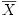). También se pueden ver ciertas diferencias (errores) en expresiones matemáticas relativamente complejas.
Para Allin Cottrell, estos dos problemas fueron lo suficiente importantes como para buscar o crear otra alternativa. El resultado fue su proyecto DBTexMath.
Hasta aquí todo muy bien pero, hasta ahora no hemos contestado la pregunta a la que hace referencia el título de esta sección. ¿Por qué usar DBTexMath en lugar de, por ejemplo, MathML?
Primero que nada, MathML y DBTeXMath parecen ser las dos únicas herramientas para auxiliar a DocBook en la edición matemática. Si algún usuario encuentra otra le agradezco que me lo comunique. Segundo, hemos visto las deficiencias de la edición directa de código MathML dentro de nuestros documentos DocBook. Y tercero, podemos decir que la edición de expresiones matemáticas en el lenguaje TeX es casi perfecta. Con unas pocas líneas se pueden crear expresiones que, en otra clase de lenguajes para los mismos propósitos serían muy complejas. Una prueba de ello es que proyectos orientados a las ciencias (como por ejemplo GSL, la librería para propósitos científicos de GNU) utilizan en su documentación de sólo texto (páginas manual o info) el lenguaje TeX para representar expresiones matemáticas complejas. Esto da una idea de lo práctico que es TeX y del gran uso que se le da. Un ejemplo de la facilidad de la conveniencia de su uso para representar expresiones matemáticas es el siguiente. La cadena
x_j = \sum_{k=0}^{N-1} z_k e^{ -2\pi i j k / N }
representa la expresión para la transformada discreta de Fourier:
Con este pequeño ejemplo, se puede apreciar la facilidad y lo
intuitivo del uso de TeX para escribir matemáticas. Breve explicativo sobre el funcionamiento y terminología de DocBook.
Esta sección está dedicada sólo para aquellas personas nuevas en la composición tipográfica de documentos utilizando DocBook. Dado que el funcionamiento de la herramienta DBTexMath está muy relacionado con los procesos de composición y publicación de los documentos DocBook, nos parece que el lector merece el contenido de esta sección. Así, llegado el punto, no estará obligado a manejarse sólo con terminología vacía, sino que podrá entender, o al menos hacerse una idea de, de qué se habla. Así es como aquel lector que no esté interesado en estos aspectos bien puede saltear el contenido de esta sección.
A continuación se muestran dos breves esquemas de los procesos por los que pasan los archivos fuentes DocBook SGML y XML, respectivamente, para llegar a formatos de salida como PDF, HTML, PostScript, etc.

Un pequeño comentario respecto a los esquemas anteriores: Es posible procesar un archivo DocBook XML a través de las hojas de estilo DSSSL con openJade. Esto se debe, en un principio a que XML es un subconjunto de SGML.
Puede decirse que el formato DocBook fue creado gracias a los meta-lenguajes de etiquetas SGML y XML[8]. ¿Qué es un meta lenguaje? Son básicamente lenguajes para la creación de otros lenguajes. Tanto en el caso de SGML o XML, estos se basan en el uso de la etiqueta. Una etiqueta es todo aquel conjunto de caracteres encerrado entre los símbolos < y >. En el caso de SGML, este lenguaje sólo define reglas básicas sobre el uso y anidación de etiquetas. Por ejemplo, se encuentra explícito en el lenguaje que cada etiqueta debe tener una etiqueta de final correspondiente y que la anidación de etiquetas debe ser perfecta, lo que significa que las etiquetas internas deben ser cerradas antes de las etiquetas externas. Por supuesto, las definiciones SGML son mucho más complejas que esto, pero básicamente esas son las reglas principales.
Dadas estas reglas básicas, todo lo demás se deja a discreción de quien programa en el meta lenguaje. Este tendrá que crear los nombres para las etiquetas, sus parámetros y las reglas específicas de anidación de estas etiquetas (i.e qué etiqueta puede estar dentro de qué otra).
DTD Document Type Definition . Ahora ya podemos definir lo que es una DTD. Si cualquiera puede realizar su propio lenguaje de etiquetas con SGML, tiene que haber un modo de poner en vigor las reglas que hemos inventado. Esto es implementado por lo que se denomina como DTD o Definición de Tipo de Documentos. Un DTD define los nombres de las etiquetas, el orden legal de las ocurrencias y las reglas de anidación para una implementación SGML particular. A la vez, los DTDs se escriben en SGML y se representan como un simple archivo en el sistema. En especial, DocBook es un DTD que se usa para definir libros y artículos.
DTD son las siglas de "(Document Type Definition", o en español "Definición del Tipo de Documento".
Como hasta ahora hemos venido haciendo, nos sentimos obligados a explicar qué es una hoja de estilo DSSSL (o en inglés DSSSL stylesheet) de las cuales se hablará a lo largo de este documento.
Hojas de estilo (stylesheets). Para componer y validar el documento utilizamos el lenguaje SGML que define, por medio de la DTD DocBook (como ya se explicó), las reglas que se deben respetar para que el documento sea válido, pero nada más. Sin embargo, esta es sólo la mitad del trabajo ya que también podríamos querer publicar nuestro documento. Con publicar nos referimos a obtener salidas en formatos orientados a la impresión (como PDF o PostScript) u orientados a Internet (como el formato HTML) u otros formatos como RTF.
En ningún momento la DTD define qué fuentes, qué espaciado entre párrafos, alineación, etc se usará. Es decir, no hay ninguna información sobre el estilo que se usará para publicar el documento DocBook en una DTD. Tan sólo existen definiciones de etiquetas, y reglas de anidación.
Es aquí dónde entran en juego las hojas de estilo. Éstas, son simples archivos que definen el estilo de la publicación del documento. Es decir, entre otras cosas definen, para cada formato de salida, la fuente y su tamaño utilizada para cada parte del documento, la alineación del mismo en la hoja, el espaciado entre párrafos, la distribución de secciones como el índice, la bibliografía, los apéndices, los pies de nota, etc.
Durante años se ha intentado producir un lenguaje estándar para realizar hojas de estilo. Entre otros se pueden destacar FOSIs[9], DSSSL[10] (lenguaje soportado por Jade, openJade y otras), CSS [11] y XSL[12]. Cabe destacar que el lenguaje DSSSL es parecido a los lenguajes de programación tipo lisp o Scheme, y el lenguaje para hojas de estilo XSL es el mismo lenguaje XML.
En nuestro caso, supondremos que el usuario usa un sistema DocBook basado en SGML y no en XML y que el lenguaje utilizado para sus hojas de estilo es DSSSL. En este caso, el último paso de la publicación de documentos es utilizar una herramienta como Jade o openJade, que interpreta el lenguaje DSSSL de la hoja de estilo y toma como entrada un documento SGML. Si le indicamos el tipo de salida deseado, esta herramienta nos lo proporcionará.
Para usuarios con experiencia en programar con lenguajes como C, el proceso de composición y publicación tipográfica puede parecer análogo al de programar. Nuestro documento *.sgml sería nuestro código fuente C, la DTD sería lo análogo al lenguaje C (las reglas de sintaxis que se deben respetar para que el documento-programa sea válido y que describen cada etiqueta-estructura) y las hojas de estilo junto con las herramientas de publicación como Jade, openJade, JadeTeX podrían verse como el compilador C. Cualquiera de las salidas ya sean PDF, HTML, RTF, etc podrían ser vistas como el archivo ejecutable compilado.
A continuación expondremos otro esquema más, visto desde el punto de vista de los lenguajes y no de los procesos que intervienen en la composición y publicación de un documento DocBook.

Uso de DBTexMath
En esta sección se explicará cómo insertar expresiones matemáticas TeX dentro de nuestros documentos DocBook. En Apéndice A se discutirá la sintaxis TeX para crear este tipo de cosas.
Para que DBTexMath pueda formatear
nuestras fórmulas matemáticas, debemos incluirlas dentro de alguna
de las etiquetas <equation>,
<informalequation> o
<inlineequation>. La etiqueta <equation>
hace que nuestra expresión matemática se represente en una nueva
línea de texto, y con un título
propio. <informalequation> es igual que
<equation> pero sin
título. <inlineequation> sin embargo, hace
que la expresión matemática aparezca en la misma línea de
texto. Por ejemplo, a pesar de que podemos escribir letras griegas
y otros símbolos matemáticos usando entidades o codificaciones
("encoding") distintas en Docbook, el uso de
<inlineequation> es muy práctico para tal
propósito dentro de un párrafo. La sintaxis básica es:
<equation><alt> "Expresión matemática TeX" </alt>
<graphic fileref="nombre-de-archivo.png">
</equation>
- De igual modo se pueden usar las etiquetas
<informalequation>o<inlineequation> - Dentro de las etiquetas
<alt>deberá ir la expresión TeX en algún modo matemático. La sintaxis para expresiones matemáticas y los modos matemáticos de TeX se explican detalladamente en Apéndice A - La etiqueta
<graphic>es necesaria para la publicación del documento en formato HTML. La expresión matemática TeX dentro de la etiqueta<alt>es exportada a una imagen PNG la cual se mostrará en el archivo *.html de salida. El nombre de la imagen PNG es igual al valor del parámetro fileref y estará en el mismo directorio de la salida HTML (posiblemente html_out/). A la etiqueta
<graphic>también se le pueden agregar otros parámetros. Por ejemplo, align="center" hará que la fórmula quede centrada en la hoja.
A continuación brindamos un ejemplo de las aplicaciones más comunes de esta sintaxis.
Ejemplo 1. Uso de DBTexMath
<para> La ecuación
<informalequation>
<alt>$ r=a+b\theta $</alt>
<graphic fileref="ecuacion_espiral.png">
</informalequation>
representa una espiral, donde
<inlineequation>
<alt>$ a, b, \in \Re $</alt>
<graphic fileref="espira_condicion_1.png">
</inlineequation>
y
<inlineequation>
<alt>$ r, \theta $</alt>
<graphic fileref="theta.png">
</inlineequation>
se refieren a las coordenadas polares.
</para>
 y r,
y r,  se refieren a las coordenadas polares.
se refieren a las coordenadas polares.
¿Cómo funciona DBTexMath?
Ahora que conocemos algo del proceso de composición y publicación de documentos DocBook, pasaremos a explicar cómo encaja DBTexMath en todo esto.
DBTexMath podría describirse como un
conjunto de archivos que permiten al usuario incrustar sus
expresiones matemáticas en formato TeX dentro del mismo
documento DocBook. Básicamente estos archivos forman una
hoja de estilo DSSSL que complementa la hoja
de estilo DSSSL de nuestro paquete DocBook
local. Funcionan de la siguiente manera: El usuario escribe sus
expresiones matemáticas en formato puro TeX dentro de una
etiqueta <alt> dentro de cualquiera de las
etiquetas <equation>, <informalequation>,
<inlineequation>, tal como ya se ha explicado en la sección de nombre Uso de DBTexMath, dentro del documento
SGML.
El proceso de publicación por parte de DBTexMath será distinto según el formato sea orientado a la impresión (PDF, PostScript), o a Internet (HTML):
Orientado a la impresión. En el caso de que se desee una salida orientada a la impresión como PDF o PostScript, el archivo *.sgml se traduce en *.tex a través de alguna herramienta como Jade u openJade. Hasta ese punto el proceso de publicación es igual al estándar. Sin embargo, el siguiente paso es pasar el archivo TeX a través del filtro Perl unescape_math.pl, el cual lo que hace es obtener las expresiones TeX de las etiquetas <alt> para que estas puedan ser evaluadas por JadeTex (programa que traduce estos archivos TeX en DVI, PostScript y PDF).
Orientada a la Internet. En el caso de que se desee una salida orientada a la Internet (formato HTML) el proceso es llevado a cabo del siguiente modo. Un script Perl llamado texmath2png.pl traduce las expresiones TeX dentro de las etiquetas <alt> (que deben estar en modo matemático) a imágenes PNG. Para cada ocurrencia matemática TeX dentro de nuestro documento DocBook se muestra la imagen PNG respectiva en el documento salida HTML.
En realidad el proceso no es tan simple como esto, pero según nuestra opinión, no hace falta saber los detalles exactos para poder insertar nuestras fórmulas en DocBook.
Obtención e instalación de DBTexMath
Antes que nada, se deberá tener instalado y funcionando un sistema DocBook (con todas las dependencias que implica: Jade, JadeTeX, las hojas de estilo DSSSL, etc). La instalación de un sistema sgml-DocBook está fuera del alcance de este tutorial. En Apéndice C se puede encontrar información sobre este punto.
Hay dos formas de tener funcionando el software dbtexmath. La primera es instalar el paquete original de DBTeXMath de Allin Cottrell. La segunda forma, la cual recomendamos por su simplicidad, es usar DBTeXMath junto con la hoja de estilo DSSSL ldp.dsl[13] para integrarla con DBTeXMath.
Recomendamos el uso de la segunda alternativa por las siguientes razones:
Simplicidad. Dado que no tendremos que hacer referencias a las hojas de estilo locales de nuestro sistema, el uso de DBTeXMath será más ágil y por lo tanto nuestros documentos serán más compatibles en otros sistemas
Ventajas implícitas de ldp.dsl. Entre las cuales se pueden enumerar entidades traducidas al español, formato de salida de calidad muy superior al de las hojas de estilo DSSSL comunes que vienen en nuestro sistema local, compatibilidad con la documentación de GNU/Linux, etc.
Solución de algunos problemas. Los símbolos que no están dentro de latex2 estándar, sino en paquetes auxiliares como latexsym o asmlatex, darán mensajes de error cuando tratemos de generar salidas en formato HTML. El problema fue solucionado en el paquete de que incluye DBTexMath junto con ldp.dsl.
Instalación del paquete original DBTeXMath
Lo primero será bajar el paquete dbtexmath-0.3.tar.gz . Como alternativa se podrá bajar el paquete dbtexmath-es.tgz el cual es la versión de dicho software pero con los comentarios de los archivos en español y un breve explicativo de cómo instalarlo.
Dado que el paquete DBTexMath, como ya se dijo, consiste principalmente en una hoja de estilo DSSSL auxiliar a la de sgml-DocBook, lo único que deberemos hacer es modificar las rutas a algunos archivos locales (las hojas de estilo DSSSL DocBook de nuestro sistema) que aparecen en un par de ficheros de dicho paquete.
Se explicará todo con un ejemplo. Supongamos que creamos el archivo DocBook probe.sgml en el directorio en donde se desempaquetó DBTexMath, por ejemplo DBTexMath-0.3.
Importante: Es muy importante que nuestro documento SGML se encuentre dentro del directorio donde se desempaquetó DBTexMath. Entre otras cosas, el archivo Makefile contiene órdenes para generar los archivos de salida y cuenta con que nuestro documento se encuentra en su mismo directorio. En realidad, para los que están acostumbrados a programar, la tarea de formatear pasa a ser similar a compilar el programa fuente. Si el usuario conoce la herramienta make, teniendo en cuenta el esquema Figura 1 le será trivial comprender el funcionamiento de DBTexMath observando el archivo Makefile.
Queremos que este nuevo documento sea un artículo. Supondremos que nuestra versión de la DTD DocBook es 4.2[14]. La declaración SGML de tipo de documento será la que estamos acostumbrados a usar, o sea:
<!DOCTYPE article PUBLIC "-//OASIS//DTD DocBook V4.2//EN">
Importante: Si su versión de la DTD DocBook es otra, debería modificar las líneas anteriores cambiando el "4.2" por alguna otra cosa.
Nota: El formateo de nuestro archivo probe.sgml no será tan sencillo como al que estamos acostumbrados hasta ahora. Es decir, para, por ejemplo, obtener una salida PDF no bastará con sólo una simple orden 'db2pdf probe.sgml o docbook2pdf probe.sgml. En realidad, tanto db2pdf y docbook2pdf son scripts shell que hacen automáticamente los procesos que se describen en Figura 1. Para obtener una salida en otro formato, de deberán ejecutar varias órdenes. Pero no nos asustemos: de todo eso se encargará la herramienta make y el archivo Makefile que debe haber venido con el paquete DBTexMath. Si se lo examina, se puede ver en él el orden de los eventos y dependencias para obtener tanto las salidas PDF como HTML.
El siguiente paso a seguir es modificar la variable DOC del archivo Makefile por el nombre de nuestro documento sin la extensión ".sgml". En nuestro caso DOC = probe. Aunque no en la mayoría de los casos, puede ocurrir que debamos cambiar algunas de las demás variables del Makefile según la configuración de nuestro sistema.
Una vez hecho esto, se debe proceder a verificar que las rutas locales que aparecen en el archivo sample-both.dsl sean las correctas para nuestro sistema. Este es el paso más delicado: la hoja de estilo DSSSL sample-both.dsl debe tener acceso a las hojas de estilo dsssl de DocBook para que puedan, de alguna manera, trabajar juntas y junto con jade sobre nuestro archivo.
Sugerencia: En la mayoría de las distribuciones GNU/Linux, las hojas de estilo DSSSL se encuentran en /usr/share/sgml/DocBook/dsssl*, aunque esto no tendría porqué ser así en todos los sistemas. En mi cajita Linux, la hoja de estilo que uso es /usr/share/sgml/docbook/dsssl-stylesheets-cygnus/stylesheets/cygnus-both.dsl.. Probablemente, si hacemos cat `which db2html` | grep DB_STYLESHEET o cat `which docbook2html` | grep DB_STYLESHEET aparezcan rutas a las hojas de estilo que utilizan nuestro paquete DocBook-tools, las cuales, si tenemos bien configurado nuestro sistema, deberían ser las correctas.
Si hemos hemos hecho todo correctamente, ya deberíamos ser capaces de usar DBTeXMath. Esto se discute en la sección de nombre Obtención de salidas en formatos HTML y PDF.
Instalación de DBTeXMath junto con ldp.dsl
El paquete que contiene el software DBTeXMath junto con la hoja de estilo ldp.dsl se puede obtener de http://www.geocities.com/cancerbero_sgx/dbtexmath_ldp.dsl.tar.gz .
A diferencia del paquete original, si usamos este paquete, no será necesario insertar las rutas a las hojas de estilo locales de Docbook. El método de puesta en funcionamiento del software DBTeXMath será el mismo que el anterior, pero omitiendo el paso 4. Esto hace que el uso del software DBTeXMath sea casi inmediato. El único requisito necesario para que funcione será modificar en el Makefile la variable DOC como ya se indicó.
A diferencia del paquete original, si usamos una estrategia en cuanto a las hojas de estilo como la ofrecida en tldp.org/authors/ldp.dsl, no será necesario insertar las rutas a las hojas de estilo locales de Docbook. El método de puesta en funcionamiento del software DBTeXMath será el mismo que el anterior, pero omitiendo el paso 4. Esto hace que el uso del software DBTeXMath sea casi inmediato. el único requisito necesario para que funcione será modificar en el Makefile la variable DOC como ya se indicó.
Obtención de salidas en formatos HTML y PDF
Si hemos hecho todo bien en la sección anterior, y si nuestro archivo probe.sgml no tiene errores (tanto de síntaxis sgml-DocBook como en las expresiones matemáticas en TeX), podremos formatear nuestro archivo probe.sgml a HTML simplemente escribiendo make html (salida que quedará en el subdirectorio, html_out) o make htmls (salida que quedará en el subdirectorio, htmls_out y que tendrá diversos archivos html) . De manera análoga, podremos obtener una salida de este documento en formato PDF, escribiendo make pdf. Si queremos publicar el documento en ambos formatos, podremos hacerlo simplemente escribiendo make.
Nota: No se nos ocurre una manera limpia de obtener salidas en formato RTF (formato de texto enriquecido). Cabe decir que, dado el poco interés por este formato, tanto por parte de nosotros como por parte del autor de DBTeXMath, no nos hemos ocupado mucho en resolver esta carencia. Se nos ocurren dos alternativas. La primera sería obtener un archivo único HTML (make html) y aplicarle el filtro html2db[15]. Luego de tener el documento en formato Docbook, podremos utilizar las herramientas db2rtf o docbook2rtf para obtener una salida en formato RTF. La segunda alternativa sería, luego de obtener un archivo único HTML, abrirlo con el software Writer de OpenOffice.org (software libre), y guardar como RTF.
A modo de prueba, ofrezco un archivo probe.sgml, sin errores:
<!DOCTYPE article PUBLIC "-//OASIS//DTD DocBook V4.2//EN">
<article>
<articleinfo>
<title>Prueba de DBTexMath en DocBook</title>
<author>
<firstname>Sebastián</firstname>
<surname>Gurin</surname>
<email>cancerbero_sgx@users.sourceforge.net</email>
</author>
</articleinfo>
<section>
<title>Matrices</title>
<para>A continuación va un ejemplo de la representación de
expresiones matemáticas que involucran matrices.</para>
<informalequation>
<alt>
\renewcommand{\arraystretch}{1.3}
\setlength{\arraycolsep}{.05in}
\[
\left[
\begin{array}{c}
\dot{L} \\
\dot{C}
\end{array}
\right]
= \frac{1}{-\alpha}
\left[
\begin{array}{cc}
af & bfh \\
1 & b(fh-k)
\end{array}
\right]
\left[
\begin{array}{c}
L \\
C
\end{array}
\right]
-\frac{1}{\alpha}
\left[
\begin{array}{cc}
afh & 0 \\
h & \alpha
\end{array}
\right]
\left[
\begin{array}{c}
\dot{m} \\
r_w
\end{array}
\right]
\]
</alt>
<graphic fileref="matriz_mult.png" align="center">
</informalequation>
</section>
</article>
Consejos
Considero que lyx puede resultar de ayuda para muchos usuarios. Si por falta de tiempo no se puede aprender estrictamente la sintaxis TeX, se puede usar lyx y su panel para la edición de fórmulas matemáticas para escribir la expresión deseada. Todo esto es de un modo WYSIWYG, por lo que no debe resultar difícil a cualquier usuario. Luego, se podrá exportar el documento a formato LaTeX, abrirlo en un editor de textos y pegar nuestra expresión dentro de nuestro documento DocBook. Este procedimiento también se puede usar cuando no nos acordamos de memoria ciertos comandos, letras griegas, o para construcciones complejas como matrices, etc.
Un buen tutorial de Lyx y SGML se encuentra en www.karakas-online.de/mySGML
Tener en cuenta que para exportar el documento lyx a LaTeX, dentro de lyx se deberá ir al menú Archivo->Exportar->Latex
Depende de cada uno hasta qué punto utilizar este tipo de herramientas para editar estructuradamente, algo que sólo se debería hacer en un editor de textos como emacs. Personalmente pienso que si esto agiliza nuestra tarea (no nos distrae y no nos hace pensar en el diseño más que en el contenido), entonces está bien usarlo.
Verificando el código TeX dentro de nuestros documentos. . Haciendo un make pdf, verificar dónde están los errores de nuestro código TeX será muy difícil ya que Jade no realiza verificaciones al pasar de DocBook a TeX sino que le pasa directamente nuestras fórmulas matemáticas a JadeTex. Sin embargo, con el comando make html Jade sí verifica directamente el código TeX, y se detendrá ni bien encuentre uno.
Conclusión. Si tenemos dudas de que la sintaxis de nuestras expresiones matemáticas es correcta, hacer primero un make html.
Modificaciones en la configuración
Esta sección está dedicada a los usuarios experimentados que quieran personalizar algunos aspectos de su sistema de composición tipográfica de expresiones matemáticas.
Uso de paquetes alternativos LaTeX. Supóngase que queremos utilizar el paquete X de símbolos matemáticos TeX alternativo en el código TeX de nuestro documento Docbook. ¿Cómo decirle a DBTeXMath que queremos utilizar tal paquete?. En el archivo HTMLMath.dsl, dentro de las opciones configurables por el usuario ("User-configurable options"), se puede modificar la variable $usepackage$ para que en nuestro proceso de salida en formato HTML se tenga en cuenta un paquete (o algunos paquetes) en especial. A continuación traducimos los comentarios que aparecen dentro de la definición de dicha variable.
Así, en nuestro caso, para usar el paquete X, deberíamos escribir¿Paquetes LaTeX a cargar? Dejar una cadena vacía "" para no especificar ningún paquete. Por ejemplo, si se quiere usar las fuentes MathTime, dejar "mathtime". Si se quieren especificar más de un paquete, separarlos por comas en la cadena, por ejemplo, "amsmath,mathtime".
(define $usepackage$ "X")
Si quisiéramos hacer lo mismo pero para las salidas PDF, debemos modificar el archivo jadetex.cfg, incluyendo la línea
\usepackage{X}
Tamaño de las fórmulas matemáticas en las salidas HTML. Si queremos tener un control global del tamaño de las fórmulas matemáticas en nuestras salidas en formato HTML, podremos modificar la variable configurable por el usuario $density$ del archivo HTMLMath.dsl. Los valores que esta toma son de la forma "anchoxlargo".
Atributos configurables de las salidas PDF.
No todo es color de rosas...
Primero que nada, cabe decir que el paquete DBTexMath fue realizado voluntariamente y para uso personal del autor. Así, no fue diseñado ni planeado para cumplir con todas los requisitos que puedan surgir entre los usuarios.
A continuación enumero características que en lo personal faltarían, como también malos funcionamientos del programa. Agradecería las sugerencias de aquellos usuarios que han logrado solucionar los problemas-carencias que aquí se plantean.
Estandarización. Como ya se dijo, no existe un paquete estándar, dentro del mundo Docbook para la edición de fórmulas matemáticas. Es por esto, que en cada uno de nuestros documentos DocBook que utilicen DBTeXMath deberemos incluir las hojas de estilo en la distribución de nuestros documentos o por lo menos hacer referencia a estas.
El hecho no esta grave dado el tamaño pequeño de las hojas de estilo. Sin embargo, el proceso de obtención de salidas en formatos tales como PDF o HTML por parte de otros usuarios no será tan tribal como ejecutar una orden. Como mucho, lo que podremos hacer para remediar esta situación es usar DBTexMath junto con la hoja de estilo ldp.dsl (ver la sección de nombre Instalación de DBTeXMath junto con ldp.dsl), con lo cual, la configuración constará únicamente en cambiar el nombre de la variable DOC en el archivo Makefile.
No hay salida en formato RTF. Como ya se discutió en la sección de nombre Obtención de salidas en formatos HTML y PDF, no existe una forma directa de obtener salidas en formato RTF. Esto debe ser consecuencia de la complejidad sintáctica del formato RTF. Nótese que las salidas PDFs derivan de TeX (JadeTeX), por lo que se aprovecha esta característica para pasar las fórmulas matemáticas en TeX directamente. En el caso de HTML, una de las características que se aprovechan es el hecho de que HTML sea un lenguaje de etiquetas derivado de SGML, lo que hace más fácil modificar la hoja de estilo para mostrar las fórmulas. En lo personal el no poder obtener salidas RTF no es una gran pérdida dado que no uso para nada este formato. Yo edito en sgml-DocBook, leo en PostScript o PDF y navego en HTML ;-).
Incompatibilidades entre SGML/XML y TeX. Con algunos sistemas de edición de documentos Docbook tal como emacs con su modo PSGML, o algún otro sistema de indentación, puede suceder que el código TeX se indentado automáticamente, lo que puede generar errores de sintaxis. Esto en realidad no es realmente un error. Lo que sucede es que, simplemente, los sistemas de indentación de documentos Docbook, no fueron hechos pensando en software como DBTeXMath, o sea, no fueron diseñados para respetar otro código además que esté más allá de las DTDs.
Sugerencia: Indentar expresiones latex que aparecen dentro de las etiquetas <alt> puede causar errores. No hacerlo!
Problemas con símbolos LaTeX no estándares. Los símbolos que no están dentro de latex2 estándar, sino en paquetes auxiliares como latexsym o asmlatex, darán mensajes de error cuando hagamos un make html . No tendremos estos problemas cuando tratemos de generar salidas en formato PDF.
>Como ya se dijo, estos errores se producirán sólo si estamos usando el paquete original de DBTexMath de Allin Cottrell ya que los paquetes de símbolos latex fueron incluidos en la versión que viene con ldp.dsl.
Lentitud. Dado que cada expresión matemática es evaluada por separado, si tenemos una gran cantidad de expresiones matemáticas insertadas en el documento el formateo puede volverse un proceso lento. La generación de salidas HTML es particularmente lenta dado que cada expresión matemática en código TeX, luego de haber sido convertida a DVI, se debe convertir nuevamente a formato de imagen PNG.
Para aquel usuario experimentado, una alternativa que puede mejorar este problema es usar el software dvi2bitmap para la transformación a png. Esto es bien descripto en http://www.sagehill.net/.
Errores como el siguiente. Aunque el código sgml-DocBook y el fragmento TeX sean válidos en el siguiente segmento de código, por algún motivo el uso de TeX dentro de la etiqueta <abstract> causa problemas lo siguiente no compila
<article> <articleinfo> <date>24 de Marzo de 2004</date> <author> <firstname>Sebastián Gurin (Cancerbero)</firstname> <email>anon@adinet.com.uy</email> </author> <abstract> <para>Teorema auxiliar para deducir la ecuación de una curva en forma de espiral con centro en <inlineequation> <alt>$ (x_0, y_0) $</alt> <graphic fileref="punto.png"> </inlineequation>.</para> </abstract> </articleinfo> <!-- .... --> </article>No hemos podido averiguar cuál es la causa del error. Seguramente sea una excepción de las hojas de estilo de DBTeXMath.
A. Introducción a la representación de expresiones matemáticas en TeX
Primero que nada hay que decir que TeX no representa
estructuras matemáticas ni nada parecido, sino que es un simple
lenguaje de símbolos. Por ejemplo, no existe una estructura que
represente la operación integración de una función, o sea algo
como integral(lim_superior, lim_inferior,
f(x)), sino que el se debe representar todo símbolo por
símbolo. Así, \int ^0 _1 f(x) representa la
expresión matemática
 . Puede verse que en este caso no hay nada que
represente una estructura matemática en TeX, sino que simplemente
escribimos 4 símbolos seguidos.
. Puede verse que en este caso no hay nada que
represente una estructura matemática en TeX, sino que simplemente
escribimos 4 símbolos seguidos.
Ambientes
En TeX, existen distintos ambientes para el confeccionamiento de párrafos. Por ejemplo, si queremos introducir un cita en TeX, contamos con los ambientes quotation o quote. Si el párrafo es en realidad una imagen con una descripción sobre la misma contamos con el ambiente picture. El que nos interesa a nosotros es el ambiente para expresiones matemáticas, o simplemente modo matemático.
Cada ambiente empieza y termina de la misma manera, a saber:
\begin{nombre-del-ambiente}
.
.
.
\end{nombre-del-ambiente}
Existen tres "ambientes" que nos permiten entrar en modo matemático en TeX:
math. Para las fórmulas que aparecen incrustadas en el mismo texto. Adecuado para expresiones matemáticas sencillas, o para incrustar caracteres matemáticos simples como letras griegas, notación lógica, etc.
displaymath. Para aquellas fórmulas que aparecen en su propia línea, separadas del texto. Adecuado para expresiones matemáticas relativamente complejas que involucren, por ejemplo fracciones, límites, sumatorias, integrales, matrices, etc.
equation. Lo mismo que displaymath, excepto que se agrega un número de ecuación a la derecha del margen.
Los ambientes math y displaymath son tan usados en TeX que existen formas más cortas de escribirlos, a saber
\(...\) en lugar de \begin{math}...\end{math}
\[...\] en lugar de \begin{displaymath}...\end{displaymath}
De hecho, el ambiente math es tan común que aún tiene una forma más corta de representarse:
$ ... $ en lugar de \(...\)
La cualidad del ambiente equation es hacer referencia a fórmulas matemáticas en cualquier parte del documento TeX. Dado que DocBook tiene sus propios métodos para hacer esto, para nosotros este ambiente no será importante.
También es conveniente aclarar las diferencias sustanciales entre los ambientes math y displaymath. Algunas de estas diferencias se ven en el siguiente ejemplo.
Tabla A-1. Diferencias entre los ambientes math y displaymath.
| Ambiente | Código TeX | Salida |
| math | \begin{math}
\lim_{n \to \infty}
\sum_{k=1}^n \frac{1}{k^2}
= \frac{\pi^2}{6}
\end{math}
| |
| displaymath | \begin{displaymath}
\lim_{n \to \infty}
\sum_{k=1}^n \frac{1}{k^2}
= \frac{\pi^2}{6}
\end{displaymath}
|

Nótese la diferencia entre ambas expresiones matemáticas. Sin dudas la última está mejor espaciada y es más profesional, aunque el fragmento TeX sea el mismo.
Conclusión. Si se van a escribir fórmulas matemáticas que consten de de más de un símbolo, úsese el modo displaymath, o su forma abreviada \[ ... \].
Subíndices y superíndices
Dentro del modo matemático podremos hacer que una expresión 'exp1' aparezca como subíndice de una expresión 'exp2' escribiendo exp2_{exp1}. Análogamente, podemos hacer que 'exp1' aparezca como superíndice de 'exp2' escribiendo exp2^{exp1}.
Si la expresión que debe ser representada como subíndice consta únicamente de un caracter se pueden omitir las llaves delimitadoras. Por ejemplo, para escribir x1 puede usarse tanto x_1 como x_{1}. Lo mismo se cumple para los superíndices.
No hay nada de extraño en cómo maneja TeX este tipo de cosas y todo esto debería ser muy intuitivo al usuario. Por ejemplo, se pueden usar subíndices dentro de superíndices sin ningún tipo de problemas. Así es como e^{x _1 ^2} representa la expresión matemática 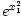.
Letras griegas
Existe un comando para cada letra mayúscula y minúscula del alfabeto griego. Generalmente el nombre del comando está definido como el nombre de la letra griega en inglés.

En Apéndice D se pueden ver todas las letras griegas listadas.
Espaciado en las fórmulas matemáticas
Cuando escribamos nuestras fórmulas en el modo matemático de TeX, en la salida de nuestros documentos se ignorará el espaciado entre caracteres. Simplemente TeX es lo bastante "inteligente" como para decidir cuál es el mejor espaciado. En realidad, TeX usará un estilo para nuestras fórmulas matemáticas similar al que se usa en los libros de matemáticas.
Esta es una característica de la edición estructurada de textos: no debemos preocuparnos de cómo lucen nuestras fórmulas, ecuaciones, funciones, matrices, etc. El sistema de formateo hará este trabajo pesado. Sin embargo, podemos tener cierto control sobre el espaciado cambiando este "comportamiento" predeterminado. Se aceptan los siguientes cuatro comandos en las expresiones TeX, siempre dentro del modo matemático:
'\;' representa un espacio relativamente basto.
'\:' representa un espacio relativamente mediano.
'\,' representa un espacio relativamente pequeño.
'\!' representa un espacio negativo relativamente pequeño.
A continuación se ofrece un ejemplo en donde el uso de estos comandos mejora la salida de nuestras expresiones matemáticas.

Tipos, estilos y tamaños de letra
Texto normal. Todas los caracteres que escribimos en el modo matemático se consideran como nombres de variables y como tales, se simbolizan con un tipo de fuente apropiado, en letras cursivas. Es por esto que, en el caso de que querramos escribir texto dentro del modo matemático existe un comando apropiado para esto. Se trata de \textrm{...} y todo lo que escribamos dentro de las llaves, será tomado como texto normal y no como notación matemática respetándose también el espaciado entre caracteres.
Por otro lado, si por alguna razón queremos resaltar el nombre de alguna variable matemática en negritas, podremos hacerlo con el comando \boldsymbol{...}[16]. Una vez más, todo lo que se encuentre entre las llaves quedará en negritas y en modo cursivo. Si por alguna razón queremos que cierto símbolo quede en negritas pero no cursivo, podremos usar análogamente a lo anterior, el comando \mathbf{}.
Tabla A-4. Ejemplo
\[
\textrm{Sea }f: \Re \rightarrow \Re
\]
\[
\textrm{Se dice que } f \textrm{ es continua en }
\mathbf{x_0} \textrm{ si y sólo si }
\]
\[
\forall \epsilon>0\textrm{, } \exists \delta>0
\textrm{ tal que si } x \in [x_0-\delta, x_0+\delta]
\]
\[
\Longrightarrow f(x) \in [f(x_0-\delta), f(x_0+\delta)]
\]
|

En el modo matemático, TeX elige el tamaño de la fuente de acuerdo al contexto. Por ejemplo, los superíndices son compuestos con una fuente más pequeña a la de su base. Si deseamos componer parte de una ecuación en fuente romana (no cursiva-itálica), no se debe usar el comando \textrm visto anteriormente, dado que el mecanismo de elección de tamaño apropiado para la fuente no funcionará[17]. Esto se da así ya que en realidad, el comando \textrm lo que hace es escapar temporalmente del modo math al modo text. Para mantener en funcionamiento el comportamiento "inteligente" de TeX en la elección del tamaño de las fuentes, úsese en lugar de \textrm el comando \mathrm. Pero cuidado! ambos comandos no son iguales. \mathrm sólo funcionará correctamente con expresiones cortas, el espaciado no estará activo y los caracteres con acentos tampoco funcionarán.
Unas palabras en cuanto al tamaño de fuente. Supóngase que queremos representar expresiones matemáticas que involucren delimitadores como paréntesis curvos, rectos, llaves o flechas. De acuerdo con su profundidad el delimitador debería tener un tamaño particular. TeX tiene una manera de elegir "inteligentemente" este tamaño.
Si por ejemplo insertamos el comando \left justo antes de un delimitador de apertura o el comando \right justo antes de un delimitador de cierre, TeX podrá determinar correctamente el tamaño de dichos delimitadores. Nótese que se deberá cerrar cada \left con su correspondiente \right y que el tamaño se determinará correctamente si ambos delimitadores de apertura y de cierre están en la misma línea. Existe un caso especial y es cuando no queremos que aparezca nada como delimitador de cierre. En ese caso se podrá usar el delimitador de cierre "invisible" con el comando "\right.".
En algunos casos será necesario especificar manualmente el tamaño correcto de algún delimitador matemático. TeX también nos dejará hacer esto por medio de los comandos \big, \Big, \bigg y \Bigg. Se deberá insertarlos como prefijos del delimitador en cuestión.

Algunos comandos para el uso matemático
\cdots. Produce tres "puntos suspensivos" como estos

\ddots. Produce una especie de tres "puntos suspensivos" en diagonal como estos

\vdots. Produce una especie de tres "puntos suspensivos" verticales como estos
\frac{num}{den}. Produce la fracción con numerador 'num' y denominador 'den'.
\ldots. Produce tres puntos suspensivos como los siguientes
\overbrace{texto}. Hace que la cadena de texto 'texto' quede con una llave encima, como por ejemplo

\underbrace{texto}. Hace que la cadena de texto 'texto' quede con una llave por debajo, como por ejemplo
\overline{texto}. Hace que la cadena de texto 'texto' quede con una línea por encima, como por ejemplo

\underline{texto}. Hace que la cadena de texto 'texto' quede con un subrallado, como por ejemplo
\sqrt[r]{arg}. representa la raíz r-ésima del argumento. Por ejemplo, 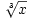 se escribe \sqrt[3]{x} dentro del modo matemático
B. Descripción de los archivos del software DBTexMath
TeXMath.dsl: fragmento de la hoja de estilo dsssl para producir salida TeX (el cual será futuramente procesado para obtener salidas en formato PDF y Postcript).
HTMLMath.dsl: fragmento de la hoja de estilo dsssl para producir salida HTML. Puede modificarse para configurar algunas características en cuanto a la apariencia de los bitmaps que representan las ecuaciones matemáticas, así como para la inclusión de los paquetes necesarios para la presentación de ciertos símbolos .
sample-both.dsl: la hoja de estilo dsssl principal (esqueleto) que es la que se encarga de hacer referencia a TexMath.dsl o a HTMLMath.dsl según qué tipo de salida se requiera (PDF-PostScript o HTML, respectivamente). Se ha mantenido este archivo de una forma simple y clara para que el usuario que quiera pueda agregar sus propias personalizaciones de estilo, o usarla como un modelo para incluir fragmentos dsssl de matemáticas en una hoja de estilo propia.
ldp.dsl: Hoja de estilo de tldp que incluye los cambios necesarios para utilizar DBTexMath
unescape_math.pl: guión (script) en lenguaje perl el cual es ejecutado luego de llamar a jade pero antes de llamar a jadetex
texmath2png.pl: guión (script) en lenguaje perlpara generar imágenes PNG al vuelo de las expresiones matemáticas que aparecen en el archivo fuente SGML en cuestión. Este script requiere de latex, dvips y el programa de conversión ImageMagick.
jadetex.cfg: archivo de configuración de ejemplo para pdfjadetex.
Makefile: Usado por la utilidad make para compilar el documento SGML. Si se lo examina, se puede ver en él el orden de los eventos y dependencias para obtener tanto las salidas PDF o HTML.
README: Este archivo no viene en la distribución oficial de DBTexMath. Es un archivo que se puede incluír cuando distribuyamos nuestros documentos y que explica cómo formatearlo.
C. Material sobre el tema
"La Guía definitiva de DocBook" de Norman Walsh y Leonard Muellner
COMO - Demistificar Docbook por Eric S. Raymond.
Donald E. Knuth. The TEXbook, Volume A of Computers and Type setting, Addison-Wesley, Reading, Massachusetts, second edition, 1984, ISBN 0-201-13448-9.
"The Not So Short Introduction to LATEX 2" o "LATEX 2 in 87 minutes". (Distribuido electrónicamente bajo la licencia de GNU en inglés y en alemán
La orden info latex. (Página info de LaTeX de mi sistema Linux)
Una presentación hecha por Jaime Dávila. http://es.tldp.org/Presentaciones/0000otras/conf-jdavila1/html
Edición Estructurada en emacs de Alejandro Imass, traducido al español por Sebastián Gurin.
D. Tablas de símbolos matemáticos[18]
Tabla D-1. Acentos
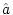 \hat{a} | | 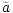 \tilde{a} | 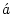 \acute{a} |
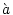 \grave{a} | 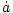 \dot{a} | 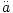 \ddot{a} | 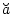 \breve{a} |
| | 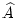 \widehat{A} | |
 \check{a}
\check{a} \bar{a}
\bar{a} \vec{a}
\vec{a} \widetilde{A}
\widetilde{A}Tabla D-2. Letras griegas minúsculas
| 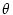 \theta | | \upsilon |
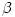 \beta | | | 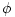 \phi |
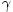 \gamma | \iota | \varpi | 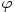 \varphi |
| | | |
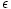 \epsilon | 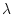 \lambda | | 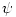 \psi |
| 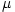 \mu | | |
\zeta | | 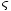 \varsigma | |
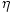 \eta | | 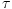 \tau |
 \alpha
\alpha o
o \vartheta
\vartheta \pi
\pi \delta
\delta \kappa
\kappa \rho
\rho \chi
\chi \varrho
\varrho \varepsilon
\varepsilon \sigma
\sigma \omega
\omega \nu
\nu \xi
\xiTabla D-3. Letras griegas mayúsculas
| 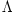 \Lambda | 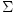 \Sigma | 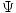 \Psi |
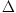 \Delta | | | |
| | |
 \Gamma
\Gamma \Xi
\Xi \Upsilon
\Upsilon \Omega
\Omega \Theta
\Theta \Pi
\Pi \Phi
\PhiTabla D-4. Relaciones Binarias[19][20]
| | 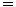 = |
\equiv | \geq or \ge | |
| \gg | 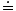 \doteq |
| \succ | |
\preceq | | \simeq |
\subset | | \approx |
\subseteq | | |
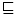 \sqsubseteq | \sqsupseteq | \bowtie |
| | |
| | |
| | |
\smile | \frown | |
| | |
 <
< >
> \leq or
\le
\leq or
\le \prec
\prec \sim
\sim \succeq
\succeq \supset
\supset \supseteq
\supseteq \cong
\cong \in
\in \ni ,
\owns
\ni ,
\owns \propto
\propto \vdash
\vdash \dashv
\dashv \models
\models \mid
\mid \parallel
\parallel \perp
\perp \asymp
\asymp :
:Tabla D-5. Flechas[21]
\leftarrow or \gets | 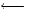 \longleftarrow | |
\rightarrow or \to | | 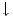 \downarrow |
\leftrightarrow | | 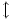 \updownarrow |
\Leftarrow | | \Uparrow |
\Rightarrow | \Longrightarrow | |
| | |
\mapsto | 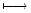 \longmapsto | |
| | |
| | |
\leftharpoondown | | |
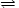 \rightleftharpoons | |
 \uparrow
\uparrow \longrightarrow
\longrightarrow \longleftrightarrow
\longleftrightarrow \Longleftarrow
\Longleftarrow \Leftrightarrow
\Leftrightarrow \Leftrightarrow
\Leftrightarrow \Longleftrightarrow
\Longleftrightarrow \Updownarrow
\Updownarrow \nearrow
\nearrow \hookleftarrow
\hookleftarrow \hookrightarrow
\hookrightarrow \searrow
\searrow \leftharpoonup
\leftharpoonup \rightharpoonup
\rightharpoonup \swarrow
\swarrow \rightharpoondown
\rightharpoondown \nwarrow
\nwarrow \iff (bigger spaces)
\iff (bigger spaces)Tabla D-6. Operadores Binarios
| 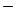 - | |
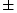\pm | | \triangleleft |
| | |
| \setminus | \star |
| 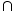 \cap | |
| 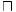 \sqcap | |
| | \bullet |
| | \diamond |
| \oslash | |
| \bigcirc | |
\bigtriangleup | | |
| |
 +
+ \mp
\mp \cdot
\cdot \div
\div \triangleright
\triangleright \times
\times \cup
\cup \ast
\ast \sqcup
\sqcup \circ
\circ \vee , \lor
\vee , \lor \wedge , \land
\wedge , \land \oplus
\oplus \ominus
\ominus \odot
\odot \uplus
\uplus \otimes
\otimes \amalg
\amalg \bigtriangledown
\bigtriangledown \dagger
\dagger \ddagger
\ddagger \wr
\wrTabla D-7. Operadores "Grandes"
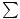 \sum | | \bigvee | |
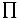 \prod | | | |
| | \bigodot | |
| \oint | \biguplus |
 \bigcup
\bigcup \bigoplus
\bigoplus \bigcap
\bigcap \bigwedge
\bigwedge \bigotimes
\bigotimes \coprod
\coprod \bigsqcup
\bigsqcup \int
\intTabla D-8. Delimitadores
| | | \Uparrow |
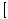 [ or \lbrack | 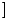 ] or \rbrack | \downarrow | |
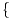 \{ or \lbrace | | \updownarrow | |
\langle | | | |
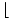 \lfloor | | \lceil | \rceil |
/ | |
 (
( )
) \} or \rbrace
\} or \rbrace \Updownarrow
\Updownarrow \rangle
\rangle | or \vert
| or \vert \rfloor
\rfloor \backslash
\backslashTabla D-9. Delimitadores "Grandes"
| \rgroup | | |
| \Arrowvert | \bracevert |
 \lgroup
\lgroup \lmoustache
\lmoustache \rmoustache
\rmoustache \arrowvert
\arrowvertTabla D-10. Otros símbolos[22]
| | | |
\hbar | | \jmath | \ell |
\Re | \Im | \aleph | |
\forall | \exists | \partial | |
' | | | \infty |
| | ||
| \top | | \surd |
| | \clubsuit | |
| \flat | \natural | |
 \dots
\dots \cdots
\cdots \vdots
\vdots \ddots
\ddots \imath
\imath \wp
\wp \prime
\prime \emptyset
\emptyset \nabla
\nabla \triangle
\triangle \bot
\bot \angle
\angle \diamondsuit
\diamondsuit \heartsuit
\heartsuit \spadesuit
\spadesuit \neg or \lnot
\neg or \lnot \sharp
\sharpBibliografía
Allin Cottrell, Documentación del software DBTexMath .
DocBook: The Definitive Guide, Norman Walsh y Leonard Muellner, 1999, 2000, 2001, 2002 O'Reilly & Associates, Inc. , http://docbook.org/ .
 , o sea 3.1415... Es más, se dice que el
propio Knuth ofrece una recompensa que sube un centavo de
dólar americano por día a quién pueda descubrir un fallo
(bug) en su programa. La
recompensa actual es de $327.68.
, o sea 3.1415... Es más, se dice que el
propio Knuth ofrece una recompensa que sube un centavo de
dólar americano por día a quién pueda descubrir un fallo
(bug) en su programa. La
recompensa actual es de $327.68.
 . Luego, tenemos que
\notin simboliza
. Luego, tenemos que
\notin simboliza